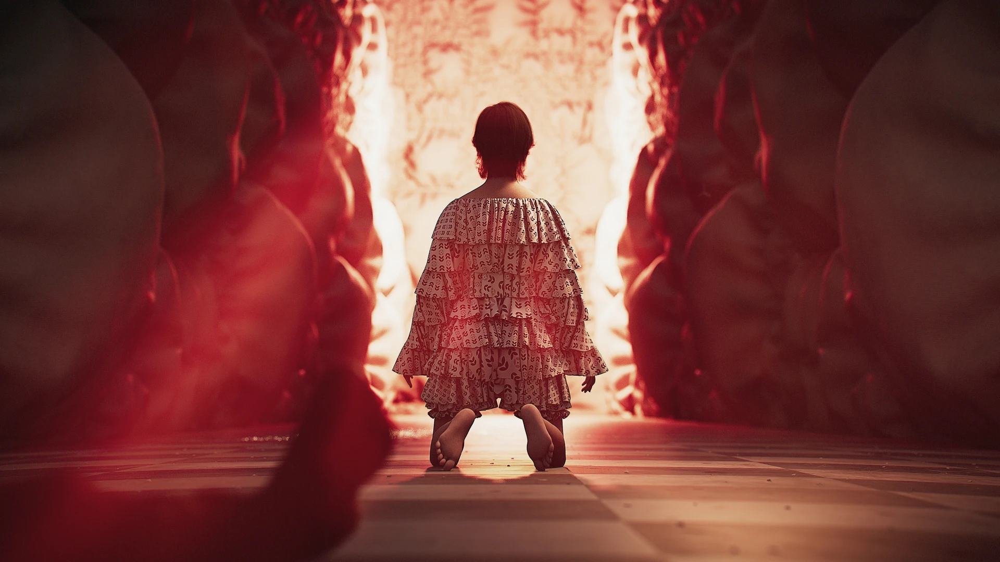
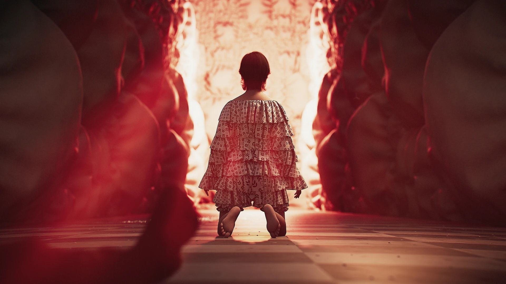

§ Project Description
This was an assignment for Andreas Cattucci, a lecturer at the FH Salzburg working at Panoply in London. He assigned us a task to find something
we are interested in—an art piece, a style, or even a tool we wanted to develop, all in the spirit of curiosity—and create a project from it.
As I enjoy creating short animations best underlined by music, I immediately knew I was going to make a little music piece.
However, I am always curious about optimizing workflows and achieving results as quickly as possible.
So, I wanted to reduce the tedious process of importing characters from Mixamo, assigning textures, and so on.
Thus, I created the Mixamo Importer, which essentially imports an already downloaded model from Mixamo that has been run
through a PDG process to rebake the textures, rename individual body parts, and more, ensuring they are all uniform. The Importer
currently supports about 10 characters from Mixamo. The exciting part is that you can easily apply any Mixamo animation you find
onto them, as they all share the same skeleton. This makes adding animated characters into your 3D scene a way easier task.
§ Process
The process for this project followed a pattern I often experience during my studies. I usually begin with the intention of creating a few tools, but this often evolves into a fully developed project.
For instance, I created two tools for this project: a JPlacement tool for COPs, which allowed me to port that functionality into Houdini, and a Mixamo importer. The latter proved especially useful in the final project, as it enabled me to quickly rig and animate both the policeman and the main character.
JMG Displacement Tool
for fastly creating abstract patterns that can be used for e.g. Sci-Fi structures. Integrated Displacement and emmision'
Mixamo Import Tool
This tool accesses a library of pre-converted Mixamo models. Since Mixamo assets often come with messy material setups, fetching them live would have been even more difficult. Converting them once was enough work, but now the library is clean and ready to use.
§ Learnings
○ Rebaking Textures in Houdini
○ Fetching and Modifying Geometry Data using Python/VEX/TOPs
○ 3D Animation & basic Rigging
○ Using Layout Features of Solaris
§ Music / Credits
I went on Artlist for the music because it's pretty easy to find tracks that fit the videos I want to create.
I came across the track "The Lighthouse" and instantly had visuals in my head for what I wanted to create. So, credit goes to Out of Flux for this masterpiece.
 
